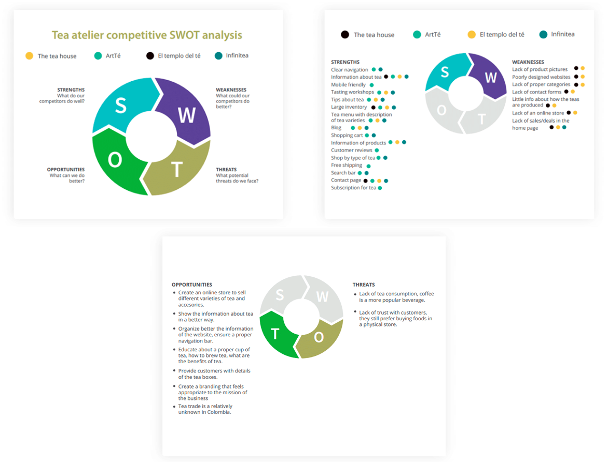

I conducted a SWOT (Strenghts, Weaknesses, Opportunities and Threats) analysis between some of the most representative business in the area. I evaluated how they sell their products and services online and possible features to have in the Tea Atelier website.
